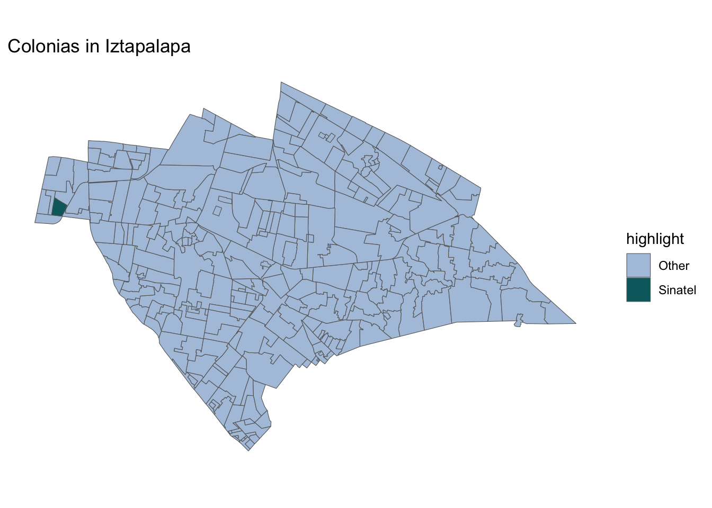
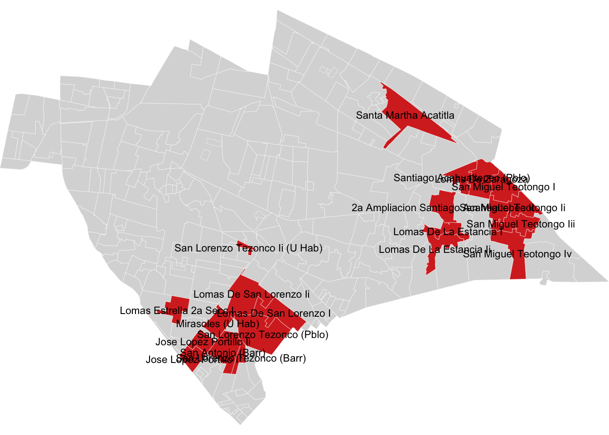
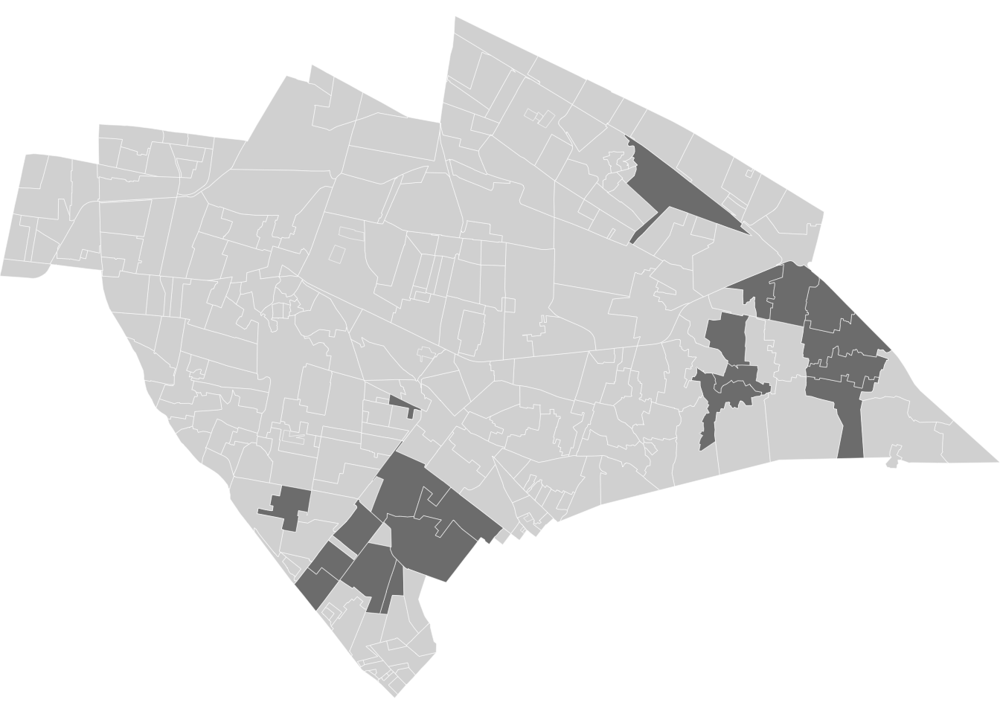
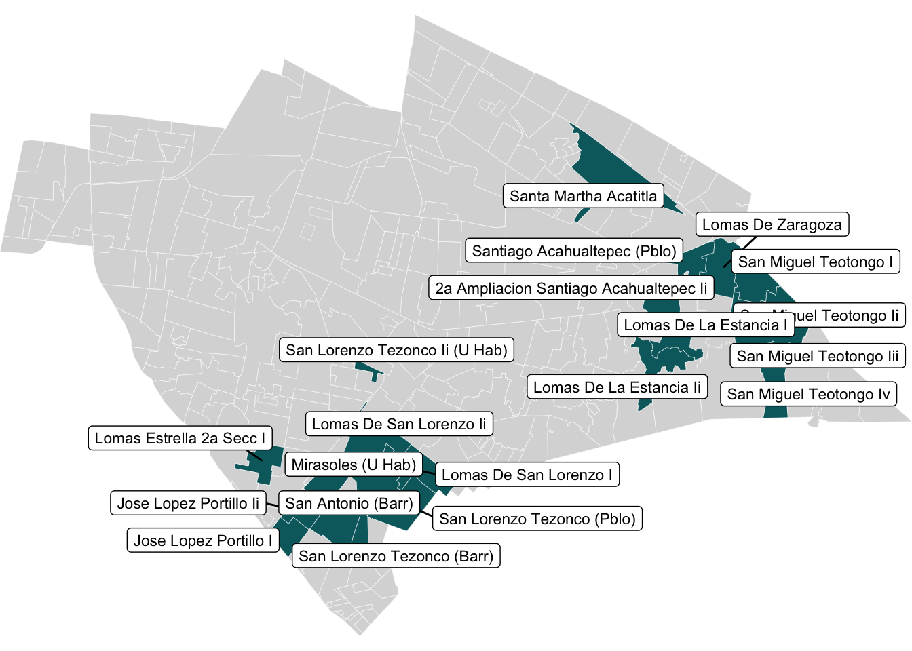

Maps
2026-03-04
Last updated: 2026-03-13
Checks: 7 0
Knit directory: QUAIL-Mex/
This reproducible R Markdown analysis was created with workflowr (version 1.7.1). The Checks tab describes the reproducibility checks that were applied when the results were created. The Past versions tab lists the development history.
Great! Since the R Markdown file has been committed to the Git repository, you know the exact version of the code that produced these results.
Great job! The global environment was empty. Objects defined in the global environment can affect the analysis in your R Markdown file in unknown ways. For reproduciblity it’s best to always run the code in an empty environment.
The command set.seed(20241009) was run prior to running
the code in the R Markdown file. Setting a seed ensures that any results
that rely on randomness, e.g. subsampling or permutations, are
reproducible.
Great job! Recording the operating system, R version, and package versions is critical for reproducibility.
Nice! There were no cached chunks for this analysis, so you can be confident that you successfully produced the results during this run.
Great job! Using relative paths to the files within your workflowr project makes it easier to run your code on other machines.
Great! You are using Git for version control. Tracking code development and connecting the code version to the results is critical for reproducibility.
The results in this page were generated with repository version 7a473a3. See the Past versions tab to see a history of the changes made to the R Markdown and HTML files.
Note that you need to be careful to ensure that all relevant files for
the analysis have been committed to Git prior to generating the results
(you can use wflow_publish or
wflow_git_commit). workflowr only checks the R Markdown
file, but you know if there are other scripts or data files that it
depends on. Below is the status of the Git repository when the results
were generated:
Ignored files:
Ignored: .DS_Store
Ignored: .RData
Ignored: .Rhistory
Ignored: .Rproj.user/
Ignored: analysis/.DS_Store
Ignored: analysis/.RData
Ignored: analysis/.Rhistory
Ignored: analysis/Hrs_by_HWISE score.png
Ignored: analysis/stacked_barplot.png
Ignored: code/.DS_Store
Ignored: data/.DS_Store
Untracked files:
Untracked: .claude/
Unstaged changes:
Deleted: analysis/04.Descriptive_plots.Rmd
Note that any generated files, e.g. HTML, png, CSS, etc., are not included in this status report because it is ok for generated content to have uncommitted changes.
These are the previous versions of the repository in which changes were
made to the R Markdown (analysis/Maps.Rmd) and HTML
(docs/Maps.html) files. If you’ve configured a remote Git
repository (see ?wflow_git_remote), click on the hyperlinks
in the table below to view the files as they were in that past version.
| File | Version | Author | Date | Message |
|---|---|---|---|---|
| html | e6ea05d | Paloma | 2026-03-13 | descriptive-stats-new |
| Rmd | 616a741 | Paloma | 2026-03-13 | data_clean |
| html | 616a741 | Paloma | 2026-03-13 | data_clean |
| Rmd | 7c773aa | Paloma | 2026-03-10 | Merge2.0 |
| Rmd | 67040b7 | Paloma | 2026-03-04 | map_cdmx |
| html | 67040b7 | Paloma | 2026-03-04 | map_cdmx |
# Install if needed:
# install.packages(c("sf", "ggplot2", "dplyr"))
library(sf)Linking to GEOS 3.13.0, GDAL 3.8.5, PROJ 9.5.1; sf_use_s2() is TRUElibrary(ggplot2)
library(dplyr)
Attaching package: 'dplyr'The following objects are masked from 'package:stats':
filter, lagThe following objects are masked from 'package:base':
intersect, setdiff, setequal, unionlibrary(geodata)Loading required package: terraterra 1.8.93Map of Mexico City
# Download Mexico administrative level 2 (municipalities/alcaldías)
mex_adm2 <- geodata::gadm(country = "MEX", level = 2, path = tempdir(), resolution = 1) |>
st_as_sf()
# Filter to Mexico City (CDMX) - NAME_1 varies, try "Ciudad de México" or "Distrito Federal"
cdmx <- mex_adm2 |>
filter(NAME_1 == "Distrito Federal")
# Add highlight column
cdmx <- cdmx |>
mutate(highlight = ifelse(NAME_2 == "Iztapalapa", "Iztapalapa", "Other boroughs"))
head(cdmx)Simple feature collection with 6 features and 14 fields
Geometry type: POLYGON
Dimension: XY
Bounding box: xmin: -99.36492 ymin: 19.23257 xmax: -99.09908 ymax: 19.51514
Geodetic CRS: WGS 84
GID_2 GID_0 COUNTRY GID_1 NAME_1 NL_NAME_1
1 MEX.9.1_2 MEX México MEX.9_1 Distrito Federal <NA>
2 MEX.9.2_2 MEX México MEX.9_1 Distrito Federal <NA>
3 MEX.9.3_2 MEX México MEX.9_1 Distrito Federal <NA>
4 MEX.9.4_2 MEX México MEX.9_1 Distrito Federal <NA>
5 MEX.9.5_2 MEX México MEX.9_1 Distrito Federal <NA>
6 MEX.9.6_2 MEX México MEX.9_1 Distrito Federal <NA>
NAME_2 VARNAME_2 NL_NAME_2 TYPE_2 ENGTYPE_2 CC_2 HASC_2
1 Álvaro Obregón <NA> <NA> Município Municipality <NA> <NA>
2 Azcapotzalco <NA> <NA> Município Municipality <NA> <NA>
3 Benito Juárez <NA> <NA> Município Municipality <NA> <NA>
4 Coyoacán <NA> <NA> Município Municipality <NA> <NA>
5 Cuajimalpa de Morelos <NA> <NA> Município Municipality <NA> <NA>
6 Cuauhtémoc <NA> <NA> Município Municipality <NA> <NA>
geometry highlight
1 POLYGON ((-99.18906 19.3955... Other boroughs
2 POLYGON ((-99.15718 19.5028... Other boroughs
3 POLYGON ((-99.17171 19.3595... Other boroughs
4 POLYGON ((-99.20575 19.3056... Other boroughs
5 POLYGON ((-99.24765 19.3859... Other boroughs
6 POLYGON ((-99.16371 19.4564... Other boroughs# Plot
ggplot(cdmx) +
geom_sf(aes(fill = highlight), color = "white", linewidth = 0.4) +
scale_fill_manual(
values = c("Iztapalapa" = "#05686D", "Other boroughs" = "#B0C4DE"),
name = NULL
) +
labs(
title = "Mexico City Boroughs (Alcaldías)",
subtitle = "."
) +
theme_minimal() +
theme(
legend.position = "bottom",
plot.title = element_text(face = "bold"),
axis.text = element_blank(),
axis.ticks = element_blank(),
panel.grid = element_blank()
)
| Version | Author | Date |
|---|---|---|
| 616a741 | Paloma | 2026-03-13 |
Map of Iztapalapa
colonias <- st_read("./data/GeoJson/georef-mexico-colonia.geojson")Reading layer `georef-mexico-colonia' from data source
`/Users/palomacz/Documents/GitHub/QUAIL-Mex/data/GeoJson/georef-mexico-colonia.geojson'
using driver `GeoJSON'
Simple feature collection with 295 features and 10 fields
Geometry type: POLYGON
Dimension: XY
Bounding box: xmin: -99.14021 ymin: 19.28484 xmax: -98.95999 ymax: 19.40088
Geodetic CRS: WGS 84# Check column names
names(colonias) [1] "geo_point_2d" "year" "col_area_code" "col_type"
[5] "sta_code" "sta_name" "mun_code" "mun_name"
[9] "col_code" "col_name" "geometry" # Create a variable to highlight Sinatel
colonias <- colonias %>%
mutate(highlight = ifelse(col_name == "Sinatel", "Sinatel", "Other"))
target_colonias <- c(
"Mirasoles (U Hab)",
"Lomas Estrella 2a Secc I",
"Lomas De Zaragoza",
"San Lorenzo Tezonco Ii (U Hab)",
"San Lorenzo Tezonco (Pblo)",
"San Lorenzo Tezonco (Barr)",
"Lomas De La Estancia Ii",
"Lomas De San Lorenzo I",
"Lomas De San Lorenzo Ii",
"San Antonio (Barr)",
"Santiago Acahualtepec (Pblo)",
"2a Ampliacion Santiago Acahualtepec Ii",
"San Miguel Teotongo I",
"San Miguel Teotongo Ii",
"San Miguel Teotongo Iii",
"San Miguel Teotongo Iv",
"Santa Martha Acatitla",
"Lomas De La Estancia I",
"Jose Lopez Portillo I",
"Jose Lopez Portillo Ii"
)
labels_sf <- colonias %>%
filter(col_name %in% target_colonias)
colonias_highlight <- colonias %>%
mutate(
highlight = ifelse(col_name %in% target_colonias, "Selected", "Other")
)
# Plot map
ggplot(colonias) +
geom_sf(aes(fill = highlight), color = "gray40", size = 0.2) +
scale_fill_manual(
values = c("Sinatel" = "#05686D", "Other" = "#B0C4DE")
) +
theme_minimal() +
labs(title = "Colonias in Iztapalapa") +
# comment this to deactivate coordinates
theme(
axis.text = element_blank(),
axis.ticks = element_blank(),
panel.grid = element_blank()
)
| Version | Author | Date |
|---|---|---|
| 616a741 | Paloma | 2026-03-13 |
ggplot() +
geom_sf(data = colonias_highlight,
aes(fill = highlight),
color = "white",
size = 0.1) +
geom_sf_text(data = labels_sf,
aes(label = col_name),
size = 3) +
scale_fill_manual(values = c(
"Selected" = "#d73027",
"Other" = "gray85"
)) +
coord_sf(expand = FALSE) +
theme_void() +
theme(legend.position = "none")Warning in st_point_on_surface.sfc(sf::st_zm(x)): st_point_on_surface may not
give correct results for longitude/latitude data
| Version | Author | Date |
|---|---|---|
| 616a741 | Paloma | 2026-03-13 |
ggplot(colonias_highlight) +
geom_sf(aes(fill = highlight), color = "white", size = 0.1) +
scale_fill_manual(values = c("Sinatel" = "#d73027", "Other" = "gray85")) +
coord_sf(expand = FALSE) +
theme_void() +
theme(legend.position = "none")
| Version | Author | Date |
|---|---|---|
| 616a741 | Paloma | 2026-03-13 |
library(ggrepel)
centroids <- st_centroid(labels_sf)Warning: st_centroid assumes attributes are constant over geometriesggplot() +
geom_sf(data = colonias_highlight,
aes(fill = highlight),
color = "white",
size = 0.1) +
geom_label_repel(
data = centroids,
aes(geometry = geometry, label = col_name),
stat = "sf_coordinates",
size = 3
) +
scale_fill_manual(values = c(
"Selected" = "#05686D",
"Other" = "gray85"
)) +
coord_sf(expand = FALSE) +
theme_void() +
theme(legend.position = "none")Warning in st_point_on_surface.sfc(sf::st_zm(x)): st_point_on_surface may not
give correct results for longitude/latitude data
unique(colonias$col_name)[[1]]
[1] "Plenitud (U Hab)"
[[2]]
[1] "Alvaro Obregon_ (Fracc)"
[[3]]
[1] "Miguel De La Madrid Hurtado"
[[4]]
[1] "Constitucion De 1917 Ii"
[[5]]
[1] "El Triunfo"
[[6]]
[1] "San Lorenzo 870 (U Hab)"
[[7]]
[1] "Ejto Constitucionalista" "Supermanzana Iii (U Hab)"
[[8]]
[1] "Puente Blanco"
[[9]]
[1] "Constitucion De 1917 I"
[[10]]
[1] "Las Peñas I"
[[11]]
[1] "Privada Gavilan (U Hab)"
[[12]]
[1] "Jose Lopez Portillo I"
[[13]]
[1] "Mirasoles (U Hab)"
[[14]]
[1] "Zacahuitzco"
[[15]]
[1] "San Juan Xalpa Ii"
[[16]]
[1] "Degollado Chico"
[[17]]
[1] "Carmen Serdan (U Hab)"
[[18]]
[1] "Vicente Guerrero Super Manzana 1 (U Hab)"
[[19]]
[1] "San Lorenzo Tezonco I (U Hab)"
[[20]]
[1] "San Ignacio (Barr)"
[[21]]
[1] "Bellavista (U Hab)"
[[22]]
[1] "Valle Del Sur"
[[23]]
[1] "Cerro De La Estrella I"
[[24]]
[1] "San Pablo (Barr)"
[[25]]
[1] "Vicente Guerrero Super Manzana 5 (U Hab)"
[[26]]
[1] "Sta Martha Acatitla Nte (Ampl) Ii"
[[27]]
[1] "Guelatao De Juarez I (U Hab)"
[[28]]
[1] "2a Ampliacion Santiago Acahualtepec Ii"
[[29]]
[1] "San Juanico Nextipac (Pblo)"
[[30]]
[1] "Uscovi (U Hab)"
[[31]]
[1] "El Santuario"
[[32]]
[1] "Santa Maria Del Monte"
[[33]]
[1] "Plutarco Elias Calles (U Hab)"
[[34]]
[1] "Huasipungo (U Hab)"
[[35]]
[1] "San Sebastian Tecoloxtitlan (Pblo)"
[[36]]
[1] "Guadalupe (Barr)"
[[37]]
[1] "Estrella Culhuacan"
[[38]]
[1] "Santa Maria Aztahuacan (Ej) I"
[[39]]
[1] "Palmitas"
[[40]]
[1] "El Prado"
[[41]]
[1] "San Jose Aculco"
[[42]]
[1] "Apatlaco"
[[43]]
[1] "Ejercito De Oriente (U Hab) I"
[[44]]
[1] "Juan Escutia Ii"
[[45]]
[1] "Valle De Luces I"
[[46]]
[1] "Ejto De Ote Ii (U Hab)"
[[47]]
[1] "Consejo Agrarista Mexicano I"
[[48]]
[1] "Paraje Zacatepec"
[[49]]
[1] "Huitzico-La Poblanita"
[[50]]
[1] "Granjas Estrella Iii"
[[51]]
[1] "Ce Cualli Ohtli (U Hab)"
[[52]]
[1] "San Miguel Teotongo Ii"
[[53]]
[1] "Purisima I"
[[54]]
[1] "Rinconada El Molino"
[[55]]
[1] "Arboledas"
[[56]]
[1] "Ricardo Flores Magon (Ampl)"
[[57]]
[1] "San Antonio Culhuacan (Barr)"
[[58]]
[1] "Cacama"
[[59]]
[1] "Xalpa I"
[[60]]
[1] "Citlalli"
[[61]]
[1] "Presidentes De Mexico"
[[62]]
[1] "Parajes Buenavista (Tetecon)"
[[63]]
[1] "Ermita Zaragoza (U Hab) Ii"
[[64]]
[1] "La Nueva Rosita"
[[65]]
[1] "Jardines De San Lorenzo"
[[66]]
[1] "Leyes De Reforma 2a Seccion"
[[67]]
[1] "Tepalcates I"
[[68]]
[1] "Ixtlahuacan"
[[69]]
[1] "Paseos De Churubusco"
[[70]]
[1] "Desarrollo Urbano Quetzalcoatl Ii"
[[71]]
[1] "Banjidal"
[[72]]
[1] "12 De Diciembre"
[[73]]
[1] "Alvaro Obregon"
[[74]]
[1] "Año De Juarez"
[[75]]
[1] "Ejto Constitucionalista" "Supermanzana I (U Hab)"
[[76]]
[1] "San Jose Buenavista"
[[77]]
[1] "Ignacio Zaragoza (U Hab)"
[[78]]
[1] "Rotarios (U Hab)"
[[79]]
[1] "Lomas De La Estancia Ii"
[[80]]
[1] "Lomas De Santa Cruz Meyehualco"
[[81]]
[1] "El Eden"
[[82]]
[1] "Santa Martha Acatitla"
[[83]]
[1] "Ejercito De Oriente (U Hab) Ii"
[[84]]
[1] "Carlos Hank Gonzalez"
[[85]]
[1] "San Juan Cerro (Pje)"
[[86]]
[1] "Cerro De La Estrella Ii"
[[87]]
[1] "Justo Sierra"
[[88]]
[1] "Peñon Viejo (U Hab)"
[[89]]
[1] "Xalpa Ii"
[[90]]
[1] "Cabeza De Juarez I (U Hab)"
[[91]]
[1] "La Magueyera"
[[92]]
[1] "Santa Maria Tomatlan"
[[93]]
[1] "Santa Barbara (Barr) I"
[[94]]
[1] "Gavilan (U Hab)"
[[95]]
[1] "Carlos Pacheco (U Hab)"
[[96]]
[1] "Nueva Generacion (U Hab)"
[[97]]
[1] "9 1/2 - Francisco Villa (Ejercito Constitucionalista) (Conj Hab)"
[[98]]
[1] "Paraiso (Ampl)"
[[99]]
[1] "Santa Cruz Meyehualco (Pblo)"
[[100]]
[1] "San Miguel Teotongo I"
[[101]]
[1] "Minas Polvorilla (U Hab) I"
[[102]]
[1] "San Lorenzo Tezonco (Barr)"
[[103]]
[1] "Sinatel (Ampl)"
[[104]]
[1] "Santa Cruz Vi (U Hab)"
[[105]]
[1] "Tenorios"
[[106]]
[1] "Predio Degollado"
[[107]]
[1] "Estrella Del Sur"
[[108]]
[1] "La Colmena (U Hab)"
[[109]]
[1] "8a De San Miguel (Ampl)"
[[110]]
[1] "El Molino"
[[111]]
[1] "Guadalupe Del Moral"
[[112]]
[1] "Insurgentes"
[[113]]
[1] "Vicente Guerrero Super Manzana 6 (U Hab)"
[[114]]
[1] "Moyocoyani (U Hab)"
[[115]]
[1] "Lomas De San Lorenzo Ii"
[[116]]
[1] "Santa Maria Aztahuacan (U Hab)"
[[117]]
[1] "La Regadera"
[[118]]
[1] "Allepetlali (U Hab)"
[[119]]
[1] "Tlaltenco (U Hab)"
[[120]]
[1] "San Miguel Teotongo Iv"
[[121]]
[1] "Santa Cruz Meyehualco (U Hab) I"
[[122]]
[1] "Vicente Guerrero Super Manzana 7 (U Hab)"
[[123]]
[1] "Solidaridad El Salado (U Hab)"
[[124]]
[1] "Escuadron 201"
[[125]]
[1] "Concordia Zaragoza (U Hab)"
[[126]]
[1] "Jose Lopez Portillo Ii"
[[127]]
[1] "El Vergel"
[[128]]
[1] "El Vergel Triangulo De Las Agujas Ii (U Hab)"
[[129]]
[1] "Ejto Constitucionalista Ii (U Hab)"
[[130]]
[1] "Santa Maria Tomatlan (Pblo)"
[[131]]
[1] "La Joya"
[[132]]
[1] "Lomas De La Estancia I"
[[133]]
[1] "Cananea (U Hab)"
[[134]]
[1] "El Triunfo (Ampl)"
[[135]]
[1] "F P F V (Predio El Molino) (U Hab)"
[[136]]
[1] "Leyes De Reforma 1a Seccion"
[[137]]
[1] "Tepalcates Ii"
[[138]]
[1] "Fuego Nuevo"
[[139]]
[1] "El Vergel Triangulo De Las Agujas I (U Hab)"
[[140]]
[1] "Los Reyes (Pblo)"
[[141]]
[1] "Los Reyes (Ampl)"
[[142]]
[1] "Cabeza De Juarez Ii (U Hab)"
[[143]]
[1] "Benito Juarez"
[[144]]
[1] "Las Americas (U Hab)"
[[145]]
[1] "Desarrollo Urbano Quetzalcoatl Iii"
[[146]]
[1] "Vicente Guerrero Super Manzana 3 (U Hab)"
[[147]]
[1] "Real Del Moral (Fracc)"
[[148]]
[1] "Sierra Del Valle"
[[149]]
[1] "San Jose (Barr)"
[[150]]
[1] "San Miguel (Barr)"
[[151]]
[1] "Desarrollo Urbano Quetzalcoatl I"
[[152]]
[1] "Las Peñas Ii"
[[153]]
[1] "Juan Escutia Iii"
[[154]]
[1] "Santa Cruz Vii (U Hab)"
[[155]]
[1] "Norma Issste (U Hab)"
[[156]]
[1] "San Andres Tetepilco (Pblo)"
[[157]]
[1] "Ejercito De Agua Prieta"
[[158]]
[1] "Sta Martha Acatitla Nte (Ampl) I"
[[159]]
[1] "Ricardo Flores Magon"
[[160]]
[1] "Monte Alban"
[[161]]
[1] "Juan Escutia I"
[[162]]
[1] "Paraje San Juan"
[[163]]
[1] "Nueva Generacion 103"
[[164]]
[1] "Renovacion"
[[165]]
[1] "Tula (Barr)"
[[166]]
[1] "Lomas De San Lorenzo I"
[[167]]
[1] "Santa Cruz Meyehualco (U Hab) Ii"
[[168]]
[1] "Reforma Politica I"
[[169]]
[1] "San Juan 2a Ampliación (Pje)"
[[170]]
[1] "Los Cipreses"
[[171]]
[1] "Lomas Estrella Iii (U Hab)"
[[172]]
[1] "Jose Ma Morelos Y Pavon (U Hab)"
[[173]]
[1] "Zona Militar Fave Sedena (U Hab)"
[[174]]
[1] "Ejto Constitucionalista"
[[175]]
[1] "San Nicolas Tolentino Ii"
[[176]]
[1] "Sideral"
[[177]]
[1] "El Mirador"
[[178]]
[1] "San Andres Tomatlan (Pblo)"
[[179]]
[1] "Jardines De Churubusco"
[[180]]
[1] "Lomas Estrella 1a Secc (Fracc)"
[[181]]
[1] "La Asuncion (Barr)"
[[182]]
[1] "Degollado"
[[183]]
[1] "San Juan Joya (Pje)"
[[184]]
[1] "Cabeza De Juarez Iii (U Hab)"
[[185]]
[1] "Colonial Iztapalapa (Fracc)"
[[186]]
[1] "Buenavista Ii"
[[187]]
[1] "San Miguel Teotongo Iii"
[[188]]
[1] "El Manto Plan De Iguala"
[[189]]
[1] "La Esperanza"
[[190]]
[1] "Predio Santa Cruz Meyehualco"
[[191]]
[1] "Na Hal Ti (U Hab)"
[[192]]
[1] "Cuchillas Del Moral (U Hab)"
[[193]]
[1] "El Santuario (Ampl)"
[[194]]
[1] "San Simon Culhuacan (Barr)"
[[195]]
[1] "Leyes De Reforma 3a Seccion Ii"
[[196]]
[1] "Jacarandas"
[[197]]
[1] "Aculco (Pblo)"
[[198]]
[1] "Granjas Estrella I"
[[199]]
[1] "Purisima Atlazolpa"
[[200]]
[1] "Sta Isabel Industrial"
[[201]]
[1] "Estado De Veracruz"
[[202]]
[1] "Fuerte De Loreto - La Antena (U Hab)"
[[203]]
[1] "Santiago Acahualtepec (Pblo)"
[[204]]
[1] "San Antonio (Barr)"
[[205]]
[1] "San Pablo I" "Ii Y V-Lomas Del Paraiso"
[[206]]
[1] "Magdalena Atlazolpa (Pblo)"
[[207]]
[1] "San Francisco Apolocalco"
[[208]]
[1] "Heroes De Churubusco"
[[209]]
[1] "Modelo (U)"
[[210]]
[1] "Minerva"
[[211]]
[1] "El Retoño"
[[212]]
[1] "Valle De Luces Ii"
[[213]]
[1] "Albarradas (U Hab)"
[[214]]
[1] "San Lorenzo Tezonco Ii (U Hab)"
[[215]]
[1] "Veracruzana (Ampl)"
[[216]]
[1] "Antorcha Popular I (U Hab)"
[[217]]
[1] "San Lorenzo Tezonco (Pblo)"
[[218]]
[1] "Culhuacan (Pblo)"
[[219]]
[1] "Art 4to Constitucional (U Hab)"
[[220]]
[1] "Mixcoatl"
[[221]]
[1] "Leyes De Reforma 3a Seccion I"
[[222]]
[1] "Santa Barbara (Barr) Ii"
[[223]]
[1] "El Manto"
[[224]]
[1] "Alcanfores (U Hab)"
[[225]]
[1] "La Joyita"
[[226]]
[1] "El Molino_"
[[227]]
[1] "Minas Polvorilla (U Hab) Ii"
[[228]]
[1] "Lomas De Zaragoza"
[[229]]
[1] "El Rodeo"
[[230]]
[1] "El Rosario"
[[231]]
[1] "Lomas El Manto"
[[232]]
[1] "Francisco Villa"
[[233]]
[1] "Los Angeles"
[[234]]
[1] "Granjas Estrella Ii"
[[235]]
[1] "Santa Maria Tomatlan (Ampl)"
[[236]]
[1] "Barrancas De Guadalupe"
[[237]]
[1] "San Lucas (Barr)"
[[238]]
[1] "El Sifon"
[[239]]
[1] "Ermita Zaragoza (U Hab) I"
[[240]]
[1] "Santa Martha Acatitla Sur (Ampl)"
[[241]]
[1] "Progreso Del Sur"
[[242]]
[1] "Sta Ma Aztahuacan (Pblo)"
[[243]]
[1] "Santa Maria Aztahuacan (Ej) Ii"
[[244]]
[1] "Fuentes De Zaragoza (U Hab)"
[[245]]
[1] "Progresista"
[[246]]
[1] "Cuitlahuac (U Hab)"
[[247]]
[1] "Vicente Guerrero Super Manzana 2 (U Hab)"
[[248]]
[1] "La Estacion"
[[249]]
[1] "Xopa (U Hab)"
[[250]]
[1] "Ejto Constitucionalista" "Supermanzana Ii (U Hab)"
[[251]]
[1] "Reforma Politica Ii"
[[252]]
[1] "El Triangulo"
[[253]]
[1] "Emiliano Zapata (Ampl)"
[[254]]
[1] "Tlanezicalli (U Hab)"
[[255]]
[1] "San Nicolas Tolentino I"
[[256]]
[1] "Chinampac De Juarez I"
[[257]]
[1] "La Era"
[[258]]
[1] "Chinampac De Juarez Iii"
[[259]]
[1] "Campestre Potrero"
[[260]]
[1] "Miravalle"
[[261]]
[1] "La Planta"
[[262]]
[1] "Consejo Agrarista Mexicano Ii"
[[263]]
[1] "Chinampas De Santa Ma Tomatlan"
[[264]]
[1] "Xalpa Iii"
[[265]]
[1] "San Lorenzo Xicotencatl (Pblo)"
[[266]]
[1] "Los Angeles Apanoaya"
[[267]]
[1] "Valle De San Lorenzo Ii"
[[268]]
[1] "Sector Popular"
[[269]]
[1] "Lomas Estrella 2a Secc I"
[[270]]
[1] "Lomas Estrella 2a Secc Ii"
[[271]]
[1] "Valle De Luces (U Hab)"
[[272]]
[1] "Dr Alfonso Ortiz Tirado"
[[273]]
[1] "Valle De San Lorenzo I"
[[274]]
[1] "Gama Gavilan (U Hab)"
[[275]]
[1] "Buenavista I"
[[276]]
[1] "M Maza De Juarez (U Hab)"
[[277]]
[1] "Casa Blanca"
[[278]]
[1] "Granjas Esmeralda"
[[279]]
[1] "La Polvorilla"
[[280]]
[1] "Guelatao De Juarez Ii (U Hab)"
[[281]]
[1] "2a Ampliacion Santiago Acahualtepec I"
[[282]]
[1] "Chinampac De Juarez Ii"
[[283]]
[1] "Vicente Guerrero Super Manzana 4 (U Hab)"
[[284]]
[1] "Mexicaltzingo (Pblo)"
[[285]]
[1] "Granjas San Antonio"
[[286]]
[1] "Sinatel"
[[287]]
[1] "Tenorios (Ampl)"
[[288]]
[1] "San Juan Xalpa I"
[[289]]
[1] "1a Ampliacion Santiago Acahualtepec"
[[290]]
[1] "Paraiso"
[[291]]
[1] "Santa Martha Acatitla_ (Pblo)"
[[292]]
[1] "Los Picos Vi B"
[[293]]
[1] "Texcoco El Salado"
[[294]]
[1] "San Pedro (Barr)"
[[295]]
[1] "La Polvorilla (Ampl)"
sessionInfo()R version 4.5.3 (2026-03-11)
Platform: aarch64-apple-darwin20
Running under: macOS Tahoe 26.3.1
Matrix products: default
BLAS: /Library/Frameworks/R.framework/Versions/4.5-arm64/Resources/lib/libRblas.0.dylib
LAPACK: /Library/Frameworks/R.framework/Versions/4.5-arm64/Resources/lib/libRlapack.dylib; LAPACK version 3.12.1
locale:
[1] en_US.UTF-8/en_US.UTF-8/en_US.UTF-8/C/en_US.UTF-8/en_US.UTF-8
time zone: America/Detroit
tzcode source: internal
attached base packages:
[1] stats graphics grDevices utils datasets methods base
other attached packages:
[1] ggrepel_0.9.6 geodata_0.6-6 terra_1.8-93 dplyr_1.2.0
[5] ggplot2_4.0.0 sf_1.1-0 workflowr_1.7.1
loaded via a namespace (and not attached):
[1] s2_1.1.9 rappdirs_0.3.3 generics_0.1.3 sass_0.4.10
[5] class_7.3-23 KernSmooth_2.23-26 stringi_1.8.7 digest_0.6.37
[9] magrittr_2.0.3 evaluate_1.0.3 grid_4.5.3 RColorBrewer_1.1-3
[13] fastmap_1.2.0 rprojroot_2.1.1 jsonlite_2.0.0 processx_3.8.6
[17] whisker_0.4.1 e1071_1.7-16 DBI_1.2.3 ps_1.9.1
[21] promises_1.3.2 httr_1.4.7 scales_1.4.0 codetools_0.2-20
[25] jquerylib_0.1.4 cli_3.6.5 rlang_1.1.7 units_1.0-0
[29] withr_3.0.2 cachem_1.1.0 yaml_2.3.10 tools_4.5.3
[33] httpuv_1.6.16 vctrs_0.7.1 R6_2.6.1 proxy_0.4-27
[37] lifecycle_1.0.5 classInt_0.4-11 git2r_0.36.2 stringr_1.5.1
[41] fs_1.6.6 pkgconfig_2.0.3 callr_3.7.6 pillar_1.10.2
[45] bslib_0.9.0 later_1.4.2 gtable_0.3.6 glue_1.8.0
[49] Rcpp_1.0.14 tidyselect_1.2.1 xfun_0.52 tibble_3.2.1
[53] rstudioapi_0.17.1 knitr_1.50 farver_2.1.2 htmltools_0.5.8.1
[57] rmarkdown_2.29 wk_0.9.5 compiler_4.5.3 getPass_0.2-4
[61] S7_0.2.0